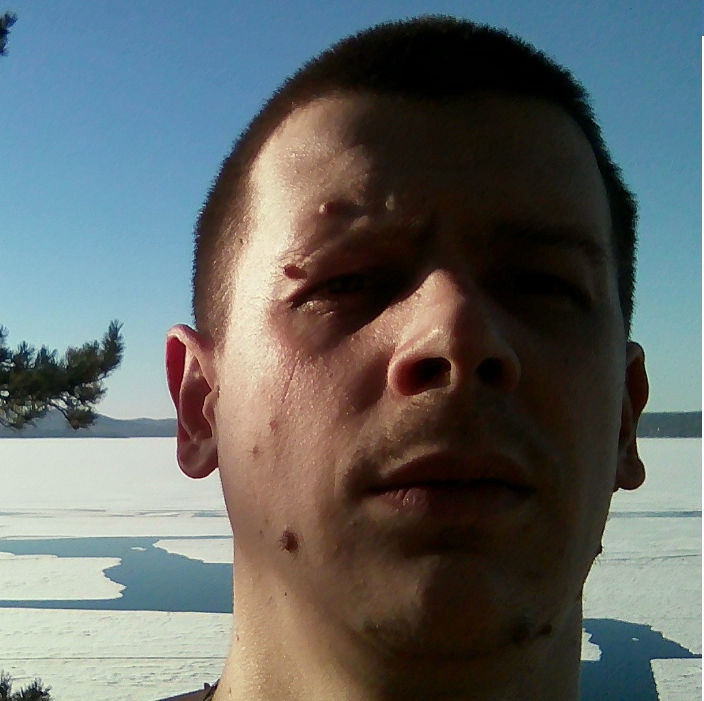

Симонов Степан Юрьевич
О себе
- Профессия: Инженер
- Образование: Высшее
- Пол: Мужской
- Дата рождения: 25.10.1987
- Место жительства: Челябинская область, г. Миасс
Цель
- Соискание должности: Junior Ruby on Rails разработчика.
- Желаемый график работы: Полная занятость, удаленная работа.
Желание работать в стабильно развивающейся компании, важна профессиональная самореализация. Рассчитываю при наличии вакансий или появлении их в будущем получить приглашение на личное собеседование.
Умения
- Знание языка программирования Ruby
- Базовые знания языка запросов SQL
- Работа с git
- Написания тестов при помощи фреймворка rspec
- Базовые знания HTML и CSS
- Работа с Linux системами
- Работа в IDE RubyMine
Образование
- ЮУрГУ. Квалификация «Инженер», Специальность «Промышленное и гражданское строительство»
- НОУ ДПО. "Центр повышения квалификации строителей", Проекты организации строительства, сноса и демонтажа зданий и сооружений, продление срока эксплуатации и консервации
- АНО ДПО. "Международная академия строительного и промышленного комплекса", ПГС
- Уральское управление Ростехнадзора «Проектирование сетей газораспределения и газопотребления»
- Уральское управление Ростехнадзора «Промышленная безопасность»
- Хороший программист. Онлайн интенсив Ruby on Rails.
История трудовой деятельности
- c 08.2018 - по настоящее время ООО "ИнженерИнвест" Главный инженер проекта (ГИП).
- c 10.2014 - по 08.2018 ООО "Уралрегионгаз" Ведущий инженер-проектировщик.
- c 2013 - по 08.2014 ООО "ПТП"Урал" Инженер отдела главного энергетика.
- c 2012 – по 2013 Вооружённые силы РФ Инженер отдела главного энергетика.
- c 02.2011 - по 2012 ООО "ПТП"Урал" Инженер отдела главного энергетика.
